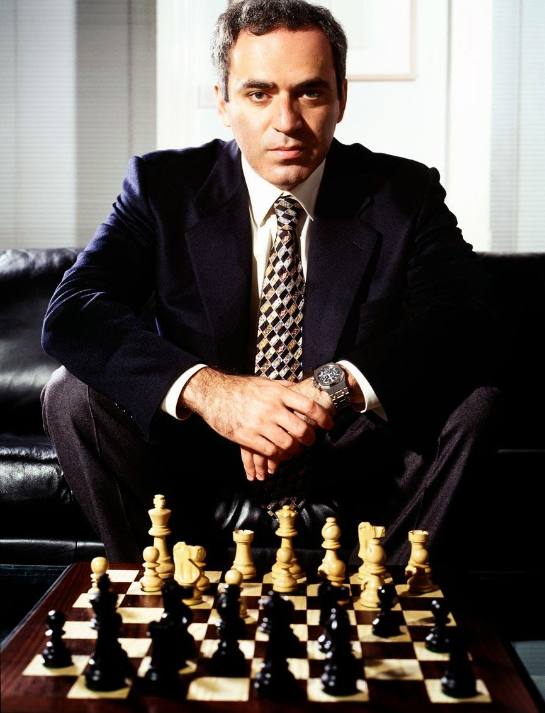
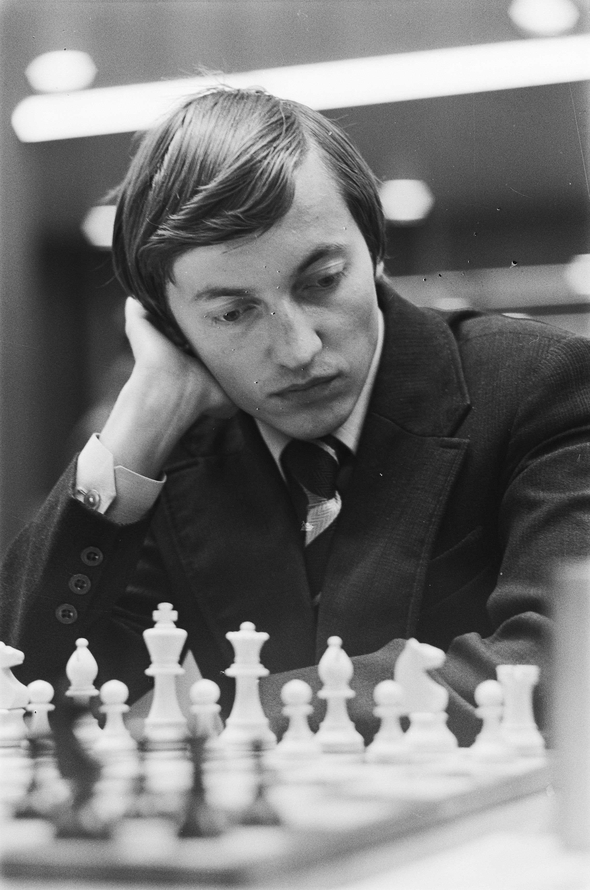
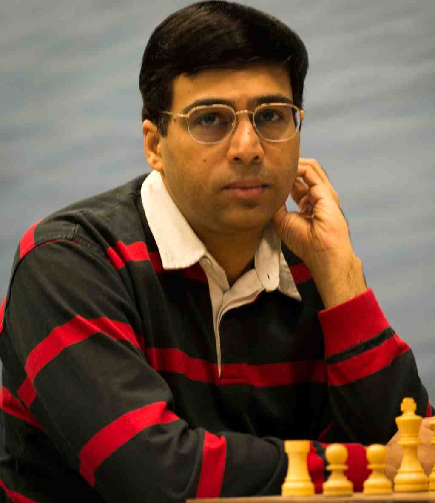
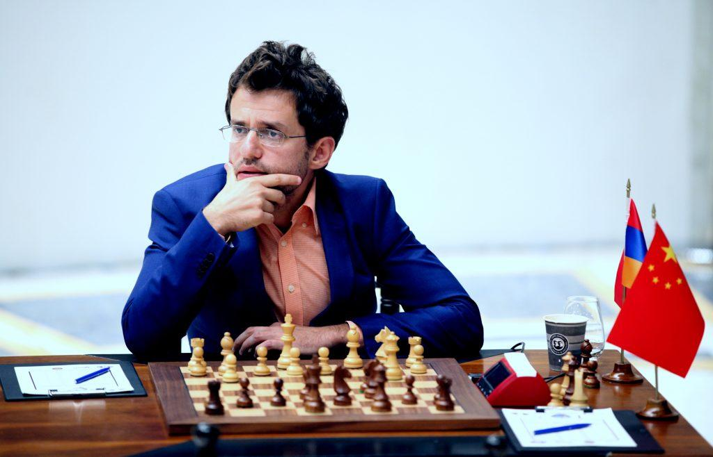
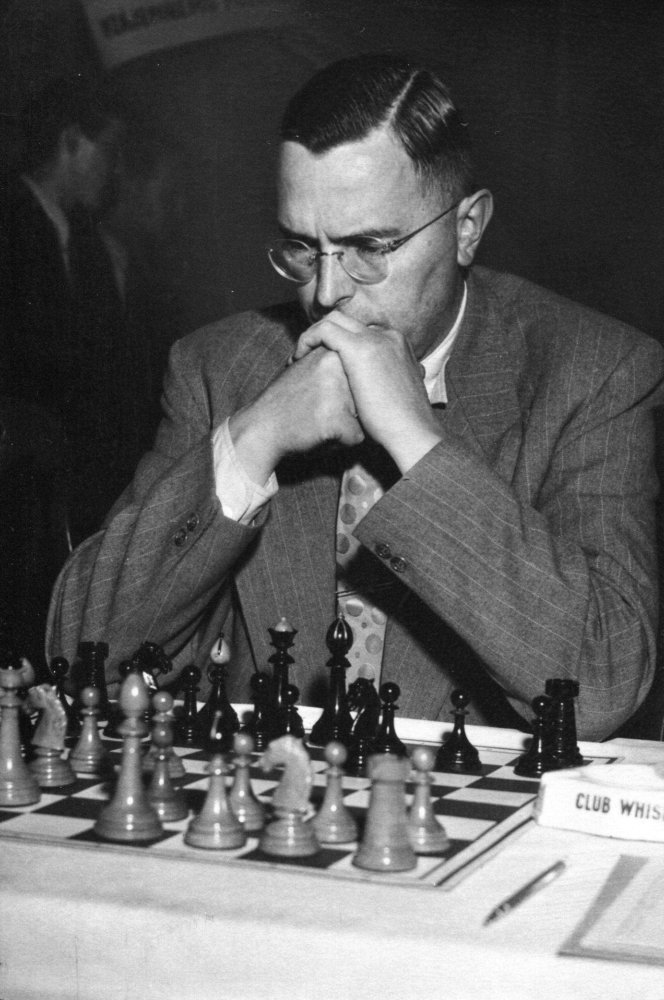
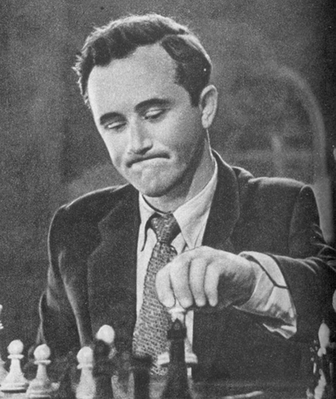

famous chess games of all time
world chess championship 1985
75th taha steel tournament
Zurich 1953 chess tournament
Garry kasparov vs Anatoly karpov
Viswanathan Anand vs Levon Aronian
Max Euwe vs Efim Geller





